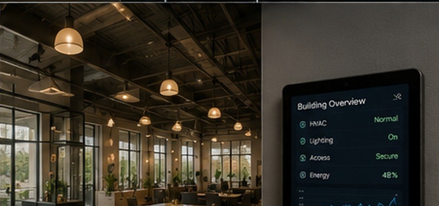

Building OverviewHVAC, lighting, access and energy on one screen.
COMMERCIAL • NEW YORK & NEW JERSEY
Most buildings lose money on things nobody has time to check — lights left on, equipment nobody is watching, and controls scattered across four separate systems. We bring those into one place.
Free walkthrough, no obligation. We start with the equipment you already own.
WHAT WE AUTOMATE
Put lighting, signage and HVAC on real schedules that follow your actual hours — with an override for the nights that run long.
Bring rooftop units, split systems and zone thermostats into one screen, so nobody is walking the building to find out what is running.
Door status, locks and camera views in one place, with alerts built around the hours nobody should be there.
Watch pumps, compressors, temperatures and water so a failure shows up as an alert instead of a Monday morning surprise.
Track usage by system and spot the equipment quietly running around the clock — the part most buildings never measure.
Tank levels, walk-in temperatures, a machine that needs watching — if it can be sensed, it can usually be monitored and alerted on.
Not sure whether your setup can do this? Call (845) 551-6078 and describe it — we’ll tell you straight.
HOW IT WORKS
The goal is fewer things to check and fewer surprises — not a bigger control system than the building needs.
START A CONVERSATION
Tell us about the building, the equipment, and what keeps needing someone to go check on it.
Calls and texts answered 7 days a week. Free walkthrough, no obligation — tell us what room, what equipment, or what problem. A photo is often enough to get started.
Serving Orange & Rockland County NY and Sussex, Passaic & Bergen County NJ.